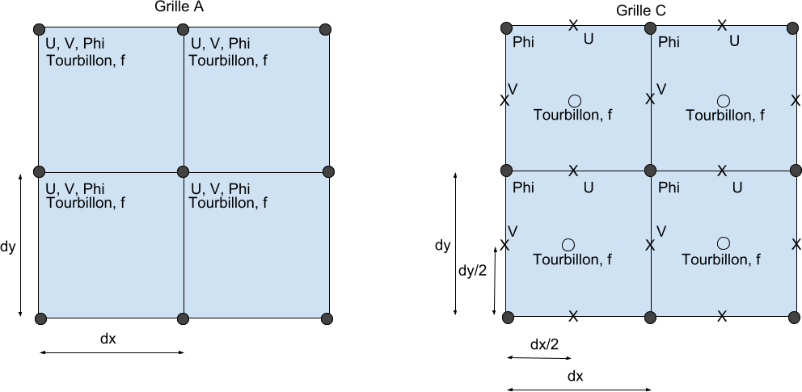
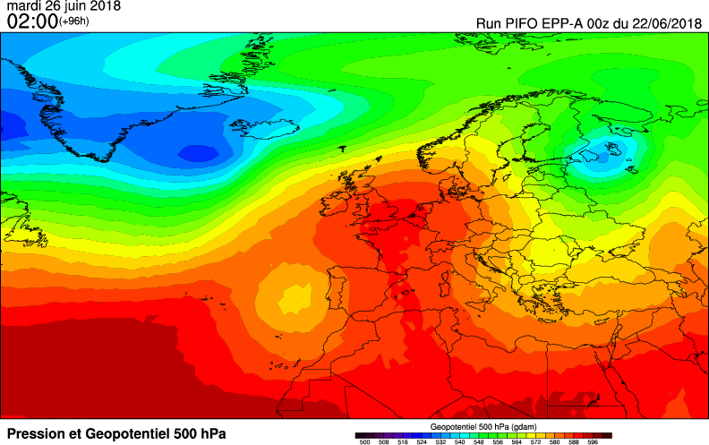
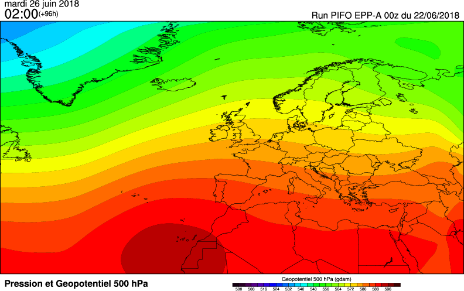
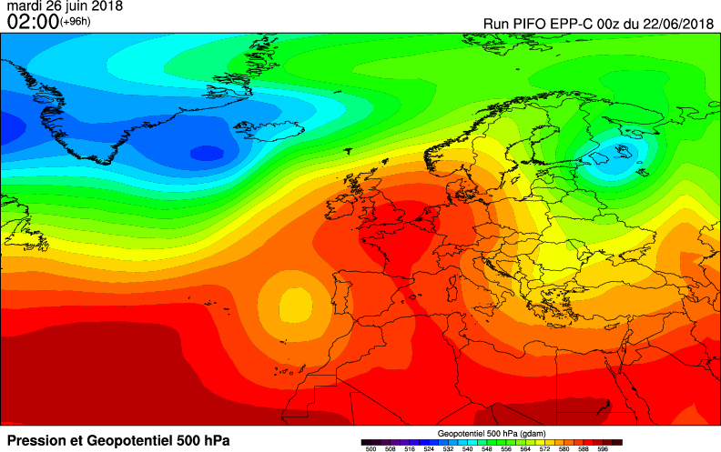
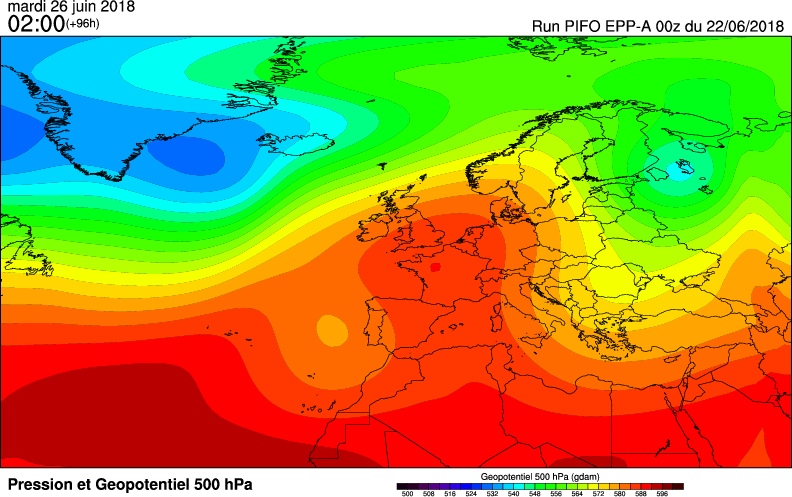
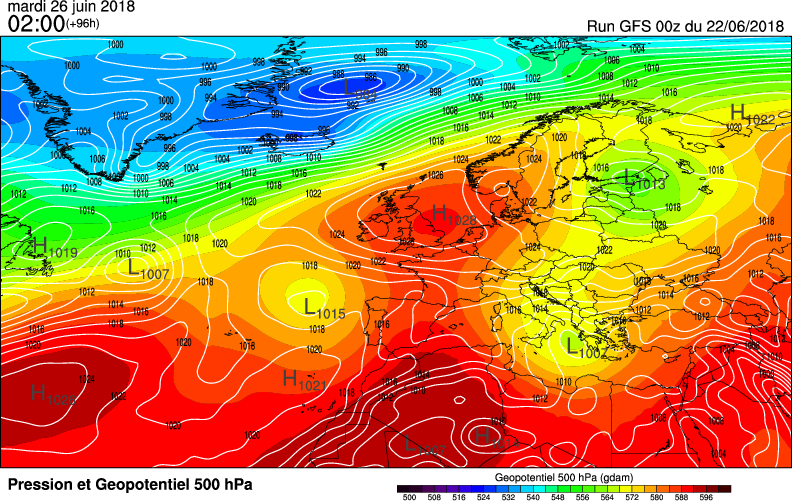

Depuis le tutoriel sur le modèle barotrope, beaucoup de code a été écrit, et de nombreux tests ont été effectués. Un gros travail de refactoring a été effectué pour constituer un framework de développement et test pour expérimenter les variantes du modèle et les futures implémentations comme le modèle barocline. Mettons aujourd'hui le focus sur un perfectionnement du modèle barotrope : l'utilisation de la grille C. Voyons un peu de quoi il s'agit, puis nous discuterons des résultats obtenus.
La grille C
Le modèle de notre série de tutoriels est implémenté en grille A, c'est la grille la plus simple : toutes les variables sont représentées sur les mêmes points. Mais le calcul sur cette grille présente un inconvénient, en créant des ondes parasites qu'il est indispensable de filtrer pour exploiter les résultats. Elles sont dûes au découplage des points de grille pairs avec les points de grille impairs, dûs à la discrétisation des dérivées. Les micro-erreurs de calcul finissent par se cumuler et causer deux solutions qui divergent, d'où la création d'ondes de longueur 2*dx.
La grille C consiste à décaler la position des variables de vent U et V d'une demi-maille par rapport au géopotentiel. Il faut en tenir compte quand on initialise les données, afin d'interpoler correctement ces variables.

Disposition des variables sur la grille A et C
Ceci modifie la manière d'effectuer les calculs, puisque les valeurs des variables ne sont plus toutes définies aux points où l'on souhaite évaluer les dérivées. Il faut alors les reconstituer à partir des moyennes des points autour. Bien que cela fasse un léger surcroît de calcul, la méthode présente quelques avantages.
Tout d'abord, l'arithmétique discrète correspondante revient à évaluer certains termes avec un ordre de précision plus grand : les différences centrales sont évaluées avec une distance de DX au lieu de 2*DX en grille A. D'autre part, le décalage des variables a pour effet d'éliminer le découplage à l'origine des ondes parasites. Le modèle en grille C n'a donc pas besoin d'être filtré. Enfin, de part les discrétisations employées, le modèle est bien moins sujet à l'aliasing, autre phénomène de création d'ondes parasites qui peut mener à l'instabilité du calcul.
L'absence de filtrage compense largement le petit surcroît de calculs nécessaire pour chaque itération. Mais la méthode est plus contraignante sur le pas de temps, qui doit être réduit de moitié, ce qui est facilement compréhensible compte tenu de la réduction de l'intervalle pour les différences discrètes. Le gain en précision du schéma vaut malgré tout la peine, et il reste parfaitement exploitable.
Résultats
A des fins de tests, nous partons d'un scénario réel issu des données GFS du 22/06/2018 à 00h, sur un domaine Atlantique nord-Europe correspondant exactement aux cartes que nous allons tracer. La résolution spatiale est de un degré d'arc en latitude comme en longitude, ce qui fait une maille de l'ordre de 100km. La simulation se fera sur 96h avec un pas de temps de 90s. On historise les résultats toutes les 6h.
Les tests seront faits avec le modèle barotrope en grille A non filtré, puis filtré, et enfin le modèle barotrope en grille C. Pour la grille A, on utilise le filtre de Schumann. On comparera les résultats obtenus avec les cartes issues du même run du modèle GFS.
Place aux images à t=96h :

Modèle barotrope en grille A non filtré, t=96h.

Modèle barotrope en grille A filtré, t=96h. Oups...

Modèle barotrope en grille C, t=96h.
Premiers constats qualitatifs :
Le filtre de Schumann est très destructeur sur les structures. En faisant un lissage assez violent à chaque pas de temps, on se retrouve avec une simulation qui n'a plus rien de réaliste et où tout est plat... Il va donc falloir tester un schéma où le filtre est exécuté moins souvent, par exemple avant d'enregistrer l'historique, une fois toutes les 6h.
Le modèle en grille A sans filtrage se montre assez bruité comme on peut le voir a l'aspect tremblant des isohypses sur la carte.
Le modèle en grille C n'a pas de problème de bruit, les champs restent bien lisses.
Allez on refait le test en grille A avec un filtrage toutes les 6h :

Modèle barotrope en grille A filtré toutes les 6h, t=96h
C'est mieux ! On constate que le bruitage a disparu, mais par rapport à la grille C il semble y avoir un peu de perte au niveau des structures les plus fines. Le centre de la dorsale anticyclonique est plus lissé, de même que le thalweg au sud-est qui est plus arrondi et moins marqué. Du côté de la solution trouvée, on constate finalement assez peu de différence entre la grille A et la grille C - du moins si l'on n'abuse pas du filtre de Schumann. Quelques ajustements sont vraisemblablement nécessaires pour éviter que celui-ci n'impacte trop la simulation.
Ce qui est intéressant maintenant, c'est de comparer à la réalité. Pour cela, il faudrait récupérer les données des réanalyses du NCEP et tracer les mêmes cartes pour faire ressortir les différences. N'ayant pas ces données sous la main, je me contente de comparer les résultats à la solution qu'a calculé GFS pour ce même run. GFS étant un modèle opérationnel parfaitement validé, la solution calculée reste pour moi suffisamment proche de la réalité à cette échéance. Notez bien que le barotrope ne prévoit que le géopotentiel 500hPa, les isobares de pression au niveau de la mer ne sont donc pas comparables.

La solution obtenue par GFS, t=96h.
On constate quelques différences. La position de la goutte froide au large de la péninsule ibérique n'est pas exactement au même endroit, ainsi que la dépression à l'est de la Scandinavie. En Méditerranée, le modèle ne creuse pas suffisamment la goutte froide. Sur l'Islande et le Groenland, on voit d'importantes différences au niveau du système dépressionnaire. Nous avons toutefois une solution qui ressemble assez bien à la solution GFS, car les valeurs de géopotentiel pour l'anticyclone sont quand même très proches. On garde bien une structure en oméga, et l'on constate bien une progression d'ouest en est du système dépressionnaire nord-atlantique, bien que celle-ci ne soit pas identique avec GFS.
Étant en régime de blocage, les différences sont contenues. En effet, il y a fort à parier que les différences auraient été plus importantes en cas de régime zonal davantage perturbé. N'oublions pas que le modèle barotrope est une simplification à l'extrême des équations de l'atmosphère, qui ne tient pas compte de la température, et qui plus est, sans aucun phénomène physique pris en compte. La simulation est donc complètement inertielle : pas de frottement, pas d'apport solaire, pas d'évaporation... GFS, lui, tient compte de tous ces effets qui modifient l'énergie du système.
D'autres différences peuvent être expliquées : au niveau des bords. On le voit bien à l'écrasement de la zone de bas géopotentiel sur le Groenland. Notre modèle étant à aire limitée, il y a une zone de transition qui fait un effet de "rappel" (damping) vers un forçage imposé par le modèle GFS. Nous avons ici choisi de prendre les bords constants tout au long de la simulation, ce qui d'une part dévie de la solution GFS, et d'autre part, finit inévitablement par créer une erreur vers l'intérieur du domaine.
Conclusion
Notre test n'est en aucun cas un vrai test d'évaluation de la qualité de simulation. On se contente de voir si les cartes de géopotentiel ressemblent à la réalité. Une vraie évaluation avec calcul de l'écart quadratique moyen serait bien plus scientifique, mais on remettra ça à plus tard. En tout cas, les tests effectués montrent que le modèle fonctionne et donne un résultat physiquement plausible. C'est très encourageant pour la suite du projet !
Côté temps d'exécution, je n'ai pas noté de gros écarts entre la version en grille A et la grille C, chaque pas de temps prends de l'ordre de 1-2ms sur ma machine avec Firefox. On peut quand même noter qu'au final la grille C prends le double de temps de calcul vu la contrainte supplémentaire sur le pas de temps pour assurer la stabilité numérique.
Oh j'oubliais... J'ai finalement baptisé ce projet d'expérimentations sur les modèles du nom de code PIFO (Projet Informatique à Formules Ouvertes). Un petit clin d’œil aux acronymes à la française, qui représente un peu l'état d'esprit du projet. On fait ça pour s'amuser, on verra bien le résultat !